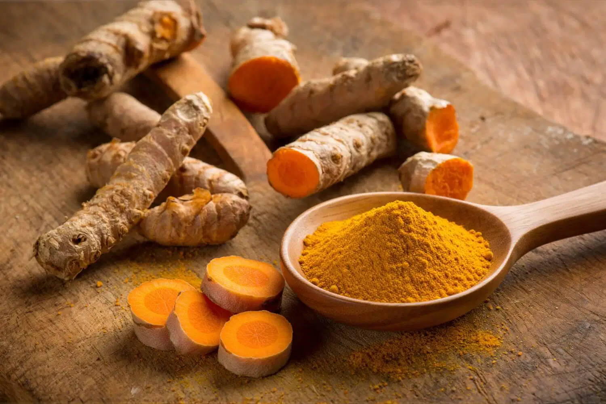
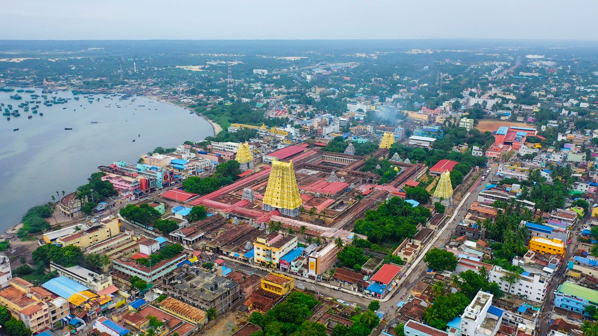
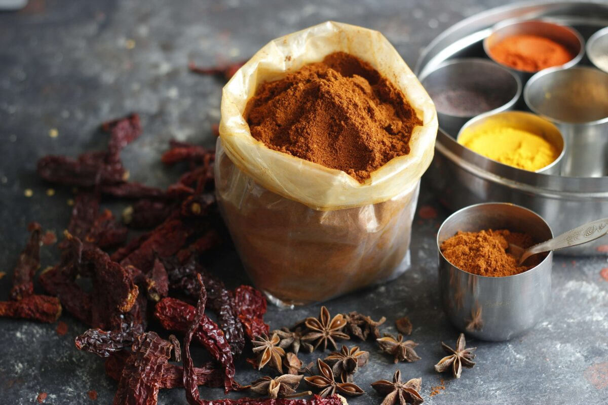
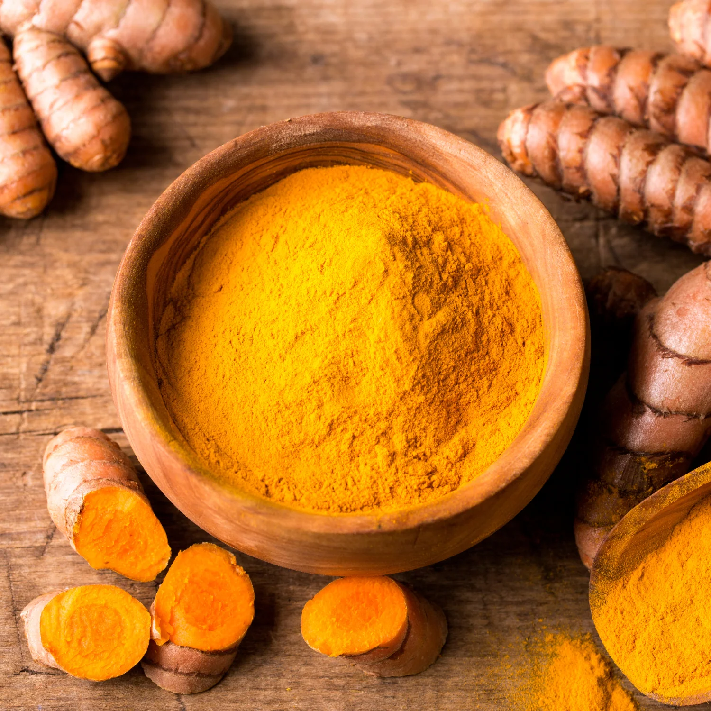
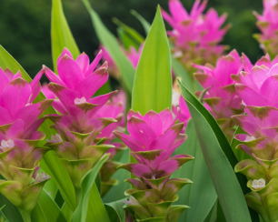

Curcuma longa
Luce liquida d’Oriente: vitalità, calore e rigenerazione

La Curcuma (Curcuma longa) è una polvere dal colore ocra vibrante, ottenuta dal rizoma di una pianta appartenente alla famiglia delle Zingiberaceae. Definita spesso "lo Zafferano delle Indie", questa polvere non è solo una spezia, ma un pilastro della medicina naturale asiatica. Il suo cuore pulsante è la curcumina, un principio attivo dalle straordinarie proprietà biologiche che conferisce alla polvere il suo aroma terroso, leggermente muschiato e il suo colore inconfondibile.
L'India non è solo il principale produttore, ma il vero custode genetico della Curcuma, ospitando oltre 40 specie diverse di questa pianta. Le coltivazioni d'eccellenza si concentrano negli stati del Tamil Nadu, Andhra Pradesh e Maharashtra, dove le abbondanti piogge monsoniche.

Le temperature tropicali favoriscono un'alta concentrazione di curcuminoidi nel rizoma. La raccolta avviene quando la parte aerea della pianta appassisce, segnale che l'energia si è trasferita sottoterra. I rizomi vengono poi bolliti o cotti a vapore per fissare il colore giallo oro, quindi essiccati al sole per circa 15 giorni e lucidati meccanicamente prima della macinatura, ottenendo una polvere pura e impalpabile.



La storia della Curcuma attraversa oltre 4.000 anni di civiltà. Nelle antiche scritture sanscrite dell'India Vedica, era chiamata Kanchani (l'Aurea). Non era considerata solo una spezia, ma una divinità vegetale. Simbolo di Purezza: Nel 700 a.C., la Curcuma era già elencata nei testi di medicina erboristica sumera e successivamente descritta da Marco Polo nel 1280, che rimase affascinato da questa radice che "aveva tutte le proprietà dello zafferano, pur non essendolo".
La scienza moderna ha confermato ciò che gli antichi sapevano empiricamente: la Curcuma agisce su più livelli;